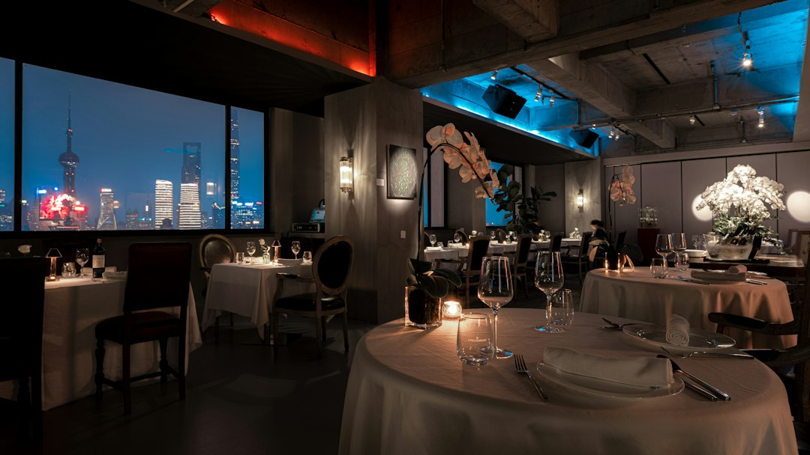

Ristorazione 4.0: Supera il Divario Competitivo con Smart Experience / Taste Engine

Ristoranti e Locali: come superare il gap competitivo adottando Smart Experience / Taste Engine
- Il confronto tra gestione tradizionale e innovazione digitale diventa sempre più critico per chi opera in Ho.Re.Ca.
- Menu statici, camerieri oberati e informazioni poco accessibili aumentano inefficienze e rischi di errore.
- Smart Experience / Taste Engine offre un e-menu interattivo con intelligenza artificiale che supporta in modo efficace e scalabile il servizio.
Analisi approfondita della notizia e delle implicazioni operative
Il settore della ristorazione sta attraversando una fase di trasformazione accelerata dall’evoluzione tecnologica e dalle nuove aspettative dei clienti. La notizia evidenzia un fenomeno ormai noto ma ancora poco affrontato da molti ristoratori: il grave divario tra chi continua a fare affidamento su strumenti tradizionali e manuali, come menu PDF statici o cartacei, e chi investe in soluzioni digitali avanzate per migliorare l’esperienza del cliente e ottimizzare la gestione interna.
L’impatto di questa disparità è particolarmente evidente nelle operazioni quotidiane di locali, ristoranti e attività Ho.Re.Ca., dove la complessità dei menu, la necessità di comunicare efficacemente informazioni su ingredienti, allergeni e abbinamenti con bevande richiedono un supporto tecnologico all’altezza.
Senza una digitalizzazione adeguata, il servizio rischia di risultare lento, poco chiaro e frustrante sia per il personale sia per i clienti. I camerieri, spesso oberati di lavoro, non riescono a dedicare il tempo necessario a ciascun cliente per illustrare i piatti e le opzioni di abbinamento, con possibili ricadute negative sull’esperienza e sul fatturato.
Le conseguenze e i costi di non agire
Continuare a gestire il menu con PDF sgranati o documenti cartacei significa accettare inefficienze operative e rischi gestionali. Il personale, sommerso da richieste di chiarimenti troppo complesse, rischia di commettere errori nella comunicazione e di perdere tempo prezioso che potrebbe essere impiegato per migliorare il servizio o perfezionare le proposte commerciali.
Questa situazione si ripercuote negativamente sull’immagine del locale e sul grado di soddisfazione dei clienti, che oggi premiano sempre più le esperienze fluide, immediate e personalizzate. Inoltre l’assenza di un sistema digitalizzato limita la capacità del ristoratore di raccogliere dati utili per analisi di performance, preferenze e trend, relegandolo a un controllo superficiale e non strategico della propria attività.
Il costo nascosto di questa mancata innovazione è dunque doppio: da un lato la perdita di clienti affezionati e l’impossibilità di attrarne di nuovi, dall’altro l’aumento dei costi operativi dovuto a inefficienze e sprechi di risorse umane.
Come Smart Experience / Taste Engine risolve il problema
In questo contesto di crescente complessità, Smart Experience / Taste Engine si propone come una soluzione tecnologica completa, studiata per rispondere alle esigenze specifiche di ristoratori, chef e titolari di locali. Si tratta di un e-menu interattivo dotato di un Maître Virtuale basato su intelligenza artificiale, che dialoga con il cliente attraverso un’interfaccia simile a WhatsApp, rendendo l’esperienza guidata e personalizzata.
Tra le funzionalità principali, Smart Experience consente un abbinamento automatico e professionale dei vini grazie a un Sommelier AI integrato, garantendo suggerimenti che valorizzano ogni portata e aumentano lo scontrino medio. Ogni piatto viene raccontato attraverso uno storytelling coinvolgente che ne esalta la qualità, gli ingredienti e l’origine, arricchito da video che mostrano l’atmosfera e l’allestimento del locale, facendo vivere un’esperienza multisensoriale anche prima di arrivare al tavolo.
Questa soluzione non richiede abbonamenti ricorrenti: con un unico sblocco a 390 euro, comprensivo di un jingle promozionale personalizzato, il locale passa a una digitalizzazione intelligente che snellisce il lavoro dei camerieri, riduce i tempi di servizio e migliora la comunicazione con il cliente finale.
| Caratteristica | Gestione Tradizionale | Con Smart Experience / Taste Engine |
|---|---|---|
| Tipo di Menu | PDF statico o cartaceo, sgranati e poco chiari | E-menu interattivo, aggiornabile e multimediale |
| Supporto al Cliente | Camerieri oberati devono spiegare manualmente ingredienti e allergeni | Maître Virtuale AI simile a WhatsApp che risponde e guida il cliente |
| Abbinamento Vini | Suggerimenti manuali e non sempre professionali | Sommelier virtuale con abbinamenti automatici e personalizzati |
| Esperienza Clienti | Esperienza statica e poco coinvolgente | Storytelling dei piatti e video immersivi sul locale |
| Modello di Pagamento | Costi ricorrenti e aggiornamenti onerosi | Sblocco una tantum a 390€ senza abbonamenti |
💡 Ti è stato utile questo approfondimento?
Condividilo con un collega o un amico del settore Ristoratori, Chef, Titolari di Locali e Attività Ho.Re.Ca. a cui potrebbe interessare!
FAQ
1. Quanto tempo richiede l’implementazione di Smart Experience / Taste Engine?
La piattaforma è progettata per un’implementazione rapida, generalmente entro poche settimane, senza interruzioni nelle attività quotidiane.
2. È necessario avere competenze tecniche per utilizzare il sistema?
No, l’interfaccia è intuitiva e progettata per essere gestita facilmente anche da personale senza competenze informatiche avanzate.
3. Come si garantisce l’aggiornamento dei contenuti del menu?
Il sistema permette aggiornamenti in tempo reale e consente di modificare piatti, prezzi e video senza costi aggiuntivi.
Inizia Subito
Sblocco una tantum a €390.00 senza abbonamenti con Jingle promozionale incluso.
Fonti Ufficiali e Risorse Esterne
Scopri l'Intelligenza Artificiale per la tua attività
Ottimizza i processi e aumenta le vendite con le soluzioni B2B di RM Studio.
Scopri Smart Experience / Taste Engine